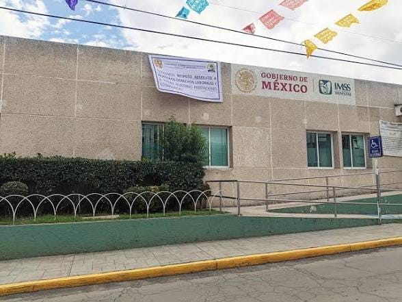
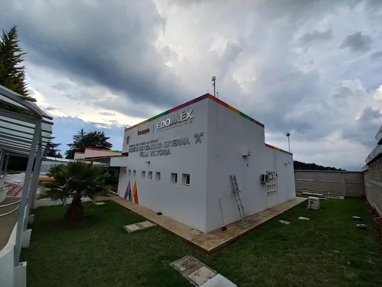

Mitos y realidades sobre el embarazo adolescente
Conoce información general y distingue los mitos de las realidades.
Centros de salud cercanos
Conoce los centros de salud de nuestra comunidad.

Centro Médico Villa Victoria
Dirección: Calle: C. Lazaro Cardenas Manzana 014, Jesus Maria, 50986, Villa Victoria, Méx.
Teléfono: 911
Horario: Abierto las 24 horas
Servicios: Serviciosde salud, orientacion y emergencias.

Issemym
Dirección: Carretera Federal Toluca - Zitacuaro, KM 46, Jesus Maria
Teléfono: 722 226 19 00
Horario: Lunes a viernes de 8:00 a 14:00 horas
Servicios: Clinica de consulta externa para servicios medicos y antención u orientación
Clinica IMMS 243
Dirección: Avenida Vialidad Lazaro Cardenas, Col. Jesus Maria, Villa Victoria
Teléfono: 800 623 2323
Horario: Lunes a Viernes de 8:00 a 20:00 horas
Servicios: Servicios Medicos y de orientacion (Atención al cliente )
Chatbot de orientación anónimo
No escribas tu nombre, dirección, teléfono u otros datos personales.
El modo básico funciona sin servidor. Para respuestas generadas por IA consulta README.md.
Test automatizado de conocimientos
Contesta y consulta tu puntuación con una explicación de cada respuesta.
¿Qué aprendiste?
Completa esta reflexión para identificar lo que aprendiste y qué temas te gustaría conocer mejor.